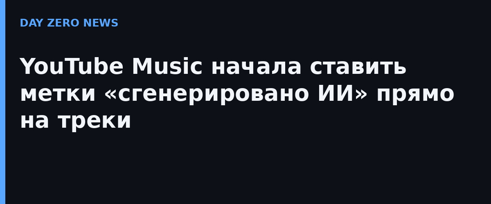

14 октября официальный блог YouTube объявил: YouTube Music начинает раздавать метки, которые показывают, что песня была создана в основном с помощью генеративного ИИ — например, когда модель сгенерировала и музыку, и вокал. Значок виден прямо на странице плеера; если по нему нажать, открывается короткое меню с пояснением, что именно сгенерировано. Обещают распространить метки и на основное приложение YouTube.
YouTube пишет, что опирается на два источника: данные от музыкальных партнёров и собственные инструменты распознавания. Компания применяет те же принципы маркировки ИИ-контента, которые уже действуют в YouTube для видео, — с раскрытием информации по правилам в Справочном центре.
За последний год стриминги захлестнула волна ИИ-музыки: ещё в 2025-м Deezer оценивал, что полностью сгенерированные треки доходят до трети всех ежедневных загрузок. Платформы борются с «ИИ-шумом», потому что такие треки отбирают роялти у живых музыкантов и портят плейлисты. Метка YouTube — шаг к прозрачности для слушателя: не удаление, а честная подпись под треком.
Это уже второй крупный случай за неделю, когда платформа признаёт ИИ-контент вслух: недавно Amazon выпустил «слушающие» ИИ-гаджеты, а теперь и Google говорит пользователям правду о том, кто на самом деле «поёт» в колонках.